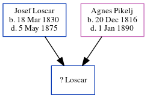

? Loscar
[ Home ] | [ Calendar ] | [ Surnames Index ] | [ Census Index ] | [ Family History ]The child of Josef Loscar and Agnes Pikelj, ? Loscar was the great-great-uncle of Michele Copp (née Phillips).
Parents
- Josef was born on Mar 18, 1830
- Agnes was born on Dec 20, 1816
Family Tree
Generated by ged2site. Last updated on Jun 6, 2024